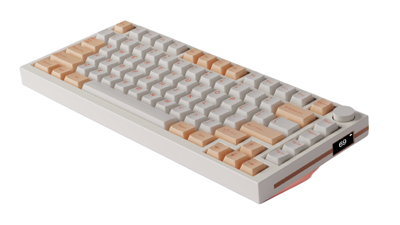

In a world of computers and desk jobs, Keyboards are our saving grace.
Whether it is by allowing us to showcase our creative capabilities or simply providing a means to get our work done, choosing your keyboard type will prove to make your task a little bit more enjoyable.
The choice of your keyboard is solely your own and can provide a reflection of who you are. Those who are fine with any old keyboard purchase and hardly type or game to begin with, may find this page useless to them. However, this webpage is intended to serve as a guide for those who are mildly interested in having a customized keyboard or those who want to make the perfect keyboard purchase. So, those with a creative spirit or those who are looking for what exactly to purchase have come to the right place!
This keyboard above is a prime example of one of many types of keyboard customization available. Many may be put off by keyboard customization simply because of the large price margin that they would have to follow. However, rest assured that keyboard customization is simply a matter of budgeting.
You can easily have a long lasting, well-built, and aesthetic keyboard for a cheaper price than what is available. Now that isn't to say you won't spend under 70 dollars for it, that's wishing for too much of a good thing. However, you can make a more informed decision on the type of keyboard you want without having to pay an absurd amount, like over 200 dollars.
All it takes is a bit of knowledge of what you would want, along with understanding of how to go about getting it.